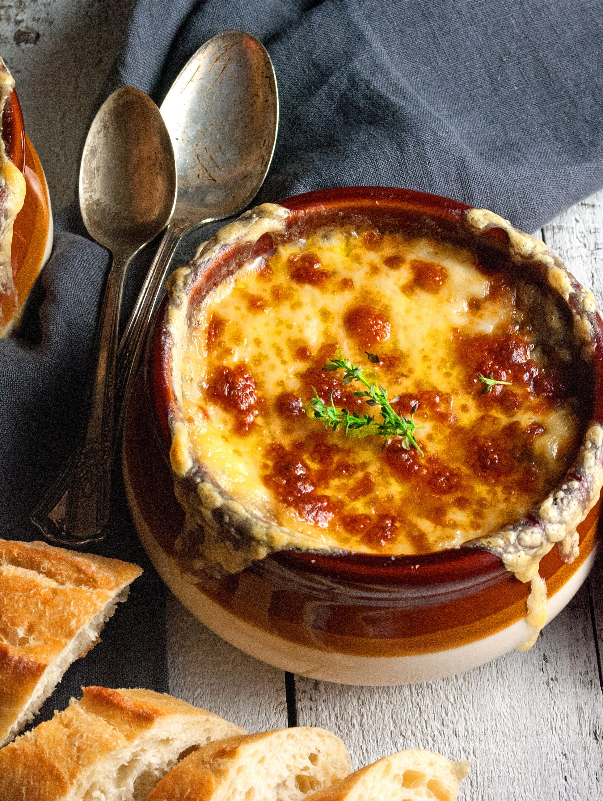
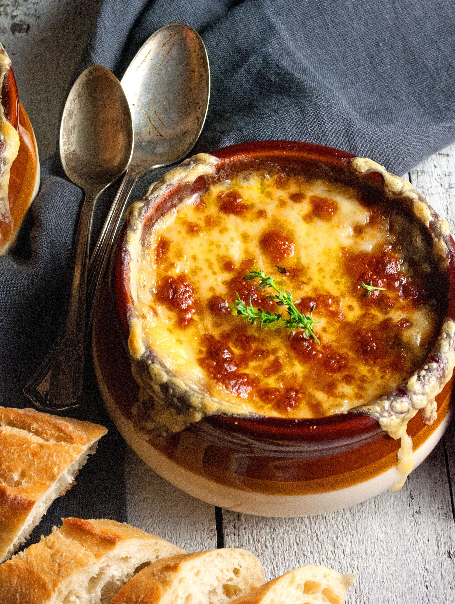

French Onion Soup
A classic french onion soup recipe absolutely must have caramelized onions. But Finding one that gives you the how and why, is few and far to come. We're talkin proper homemade french onion soup with all of it's caramelized onion goodness and lots of good melted cheese on top. Can't go wrong there.